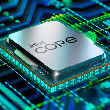
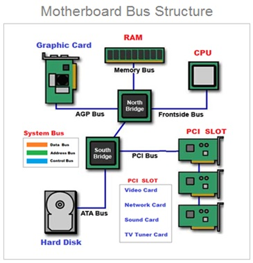
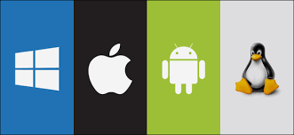
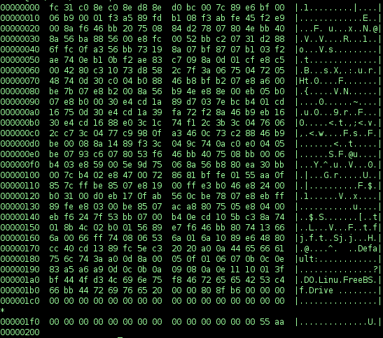

De processor, ook bekend als de CPU (Central Processing Unit), is verantwoordelijk voor het uitvoeren van berekeningen en instructies in een computer. De taken omvatten het ophalen van instructies uit het geheugen, het uitvoeren van berekeningen, het beheren van gegevensstromen en het coördineren van alle hardwarecomponenten.
RAM(Random Access Memory) is een type geheugen dat tijdelijk gegevens en programma's opslaat die momenteel in gebruik zijn door de computer. Het is vluchtig, wat betekent dat de gegevens worden gewist zodra de computer wordt uitgeschakeld. ROM (Read-Only Memory) is een type geheugen dat permanente gegevens bevat die niet gewijzigd kunnen worden. Het bevat vaak firmware en het BIOS van een computer.
Een bus is een set van geleiders (elektrische paden) die gegevens en signalen tussen verschillende onderdelen van een computer doorgeven. Het kan gegevens, adresinformatie en controlecommando's transporteren.
De Von Neumann-architectuur is een computerarchitectuur die is genoemd naar de wiskundige John von Neumann. Het is een fundamenteel ontwerp voor computers waarbij zowel gegevens als programma's in hetzelfde geheugen worden opgeslagen en waarbij de processor sequentieel instructies ophaalt, decodeert en uitvoert.
Het moederbord is het belangrijkste circuitbord in een computer. Het verbindt alle belangrijke hardwarecomponenten, zoals de processor, het geheugen, de opslagapparaten en uitbreidingskaarten, en biedt de elektrische en fysieke verbindingen die nodig zijn voor de werking van de computer.

Een SoC is een geïntegreerde schakeling die alle belangrijke componenten van een computer of elektronisch apparaat op één enkele chip plaatst. Dit omvat de processor, geheugen, grafische verwerkingseenheid en andere functionaliteiten.
Dit verwijst naar gegevensopslag die persistent is en niet verloren gaat wanneer de computer wordt uitgeschakeld. Voorbeelden zijn harde schijven, solid-state drives (SSD's), en optische schijven.
Randapparatuur zijn apparaten die aan een computer zijn gekoppeld om functionaliteit toe te voegen of uit te breiden. Voorbeelden zijn toetsenborden, muizen, printers, scanners, enzovoort.
Dit verwijst naar de fysieke en elektronische interfaces en kabels waarmee verschillende apparaten met elkaar communiceren. Voorbeelden zijn USB, HDMI, Ethernet, enzovoort.
Het besturingssysteem (OS) is software die de hardwarebronnen van een computer beheert en zorgt voor een omgeving waarin toepassingen kunnen worden uitgevoerd. Het voert taken uit zoals procesbeheer, geheugenbeheer, bestandsbeheer en gebruikersinteractie.
Talen verwijzen naar programmeertalen die worden gebruikt om softwaretoepassingen te schrijven. Compilers zijn softwaretools die programmeercode omzetten in uitvoerbare machinecode.
